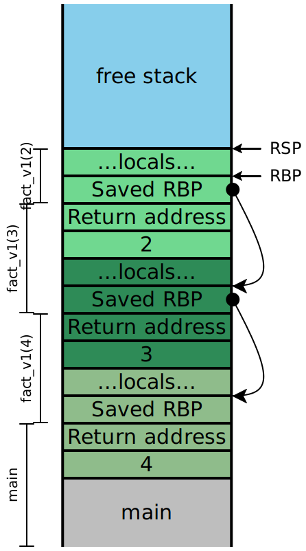
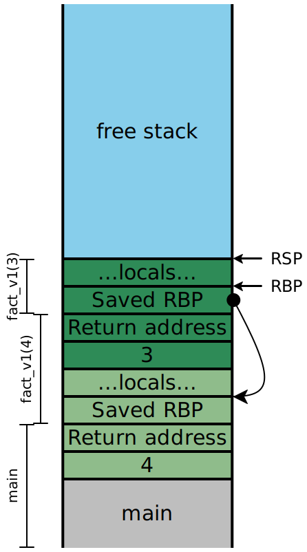

Lecture 12: First-class Functions
1 First-class Functions
In Lecture 8: Defining functions, we introduced the ability for our programs to define functions that we could then call in other expressions in our program. Our programs were a sequence of function definitions, followed by one main expression. This notion of a program was far more flexible than we had before, and lets us define many computations we simply could not previously do. But it is distinctly unsatisfying: functions are second-class entities in our language, and can’t be used the same way as other values in our programs.
We know from other courses, and possibly even from writing compilers in Rust, that
higher-order functions —
def applyToFive(it):
it(5)
end
def incr(x):
x + 1
end
applyToFive(incr)Do Now!
What errors currently get reported for this program?
Because it is a parameter to the first function, our compiler will
complain that it is not defined as a function, when used as such on line
2. Additionally, because incr is defined as a function, our compiler will
complain that it can’t be used as a parameter on the last line. We’d like to
be able to support this program, though, and others more sophisticated. Doing
so will bring in a number of challenges, whose solutions are detailed and all
affect each other. Let’s build up to those programs, incrementally.
2 Reminder: How are functions currently compiled?
Let’s simplify away the higher-order parts of the program above, and look just at a basic function definition. The following program:
def incr(x):
x + 1
end
incr(5)is compiled to:
incr:
push RBP ;; stack frame management
mov RBP, RSP
mov RAX, [RBP + 16] ;; get param
add RAX, 2 ;; add (encoded) 1 to it
mov RSP, RBP ;; undo stack frame
pop RBP
ret ;; exit
start_here:
push RBP ;; stack frame management
mov RBP, RSP
push QWORD 10 ;; push (encoded) 5
call incr ;; call function
add RSP, 8 ;; remove arguments
mov RSP, RBP ;; undo stack frame
pop RBP
ret ;; exitThis compilation is a pretty straightforward translation of the code we have. What can we do to start supporting higher-order functions?
3 The value of a function —
3.1 Passing in functions
Going back to the original motivating example, the first problem we encounter is seen in the first and last lines of code.
def applyToFive(it):
it(5)
end
def incr(x):
x + 1
end
applyToFive(incr)Functions receive values as their parameters, and function calls push values
onto the stack. So in order to “pass a function in” to another function, we
need to answer the question, what is the value of a function? In the
assembly above, what could possibly be a candidate for the value of the
incr function?
A function, as a standalone entity, seems to just be the code that comprises its compiled body. We can’t conveniently talk about the entire chunk of code, though, but we don’t actually need to. We really only need to know the “entrance” to the function: if we can jump there, then the rest of the function will execute in order, automatically. So one prime candidate for “the value of a function” is the address of its first instruction. Annoyingly, we don’t know that address explicitly, but fortunately, the assembler helps us here: we can just use the initial label of the function, whose name we certainly do know.
In other words, we can compile the main expression of our program as:
start_here:
push RBP ;; stack frame management
mov RBP, RSP
push incr ;; push the start label of incr
call applyToFive ;; call function
add RSP, 8 ;; remove arguments
mov RSP, RBP ;; undo stack frame
pop RBP
ret ;; exitThis might seem quite bizarre: how can we push a label onto the stack?
Doesn’t push require that we push a value —calling a label in the first place: the assembler replaces
those named labels with the actual addresses within the program, and so at
runtime, they’re simply normal QWORD values representing memory
addresses.
3.2 Using function arguments
Do Now!
The compiled code for
applyToFivelooks like this:start_here: push RBP ;; stack frame management mov RBP, RSP mov RAX, [RBP + 16] ;; get the param push ???? ;; push the argument to `it` call ???? ;; call `it` add RSP, 8 ;; remove arguments mov RSP, RBP ;; undo stack frame pop RBP ret ;; exitFill in the questions to complete the compilation of
applyToFive.
The parameter for it is simply 5, so we push 10 onto the stack,
just as before. The function to be called, however, isn’t identified by its
label: we already have its address, since it was passed in as the argument to
applyToFive. Accordingly, we call RAX in order to find and call our
function. Again, this generalizes the syntax of call instructions
slightly just as push was generalized: we can call an address given by a
register, instead of just a constant.
3.3 Victory!
We can now pass functions to functions! Everything works exactly as intended.
Do Now!
Tweak the example program slightly, and cause it to break. What haven’t we covered yet?
4 The measure of a function —
Just because we use a parameter as a function doesn’t mean we actually
passed a function in as an argument. If we change our program to
applyToFive(true), our program will attempt to apply true as a
function, meaning it will try to call 0xFFFFFFFFFFFFFFFF, which isn’t likely to
be a valid address of a function.
As a second, related problem: suppose we get bored of merely incrementing values by one, and generalize our program slightly:
def applyToFive(it):
it(5)
end
def add(x, y):
x + y
end
applyToFive(incr)Do Now!
What happens now?
Let’s examine the stack very carefully. When our program starts, it pushes
add onto the stack, then calls applyToFive. (The colors
indicate which functions control the data on the stack, while the
brackets along the side indicate which function uses the data on the
stack; explaining why they don’t quite align at function-argument positions.)

That function in turn pushes 10 onto the stack, and calls it
(i.e. the address currently stored in RAX):

But look at the bracketing for add! It needs two arguments, but
receives only one. So it adds 5 (encoded as 10) to the saved
RBP, since as far as it knows that stack location is where its second
parameter should be.
We had eliminated both of these problems before via well-formedness checking: our function-definition environment knew about every function and its arity, and we could check every function application to ensure that a well-known function was called, with the correct number of arguments were passed. But now that we can pass functions around dynamically, we can’t know statically whether the arities are correct, and can’t even know whether we have a function at all!
We don’t know anything about precisely where a function’s code begins, so there’s no specific property we could check about the value passed in to determine if it actually is a function. But in any case, that value is insufficient to encode both the function and its arity. Fortunately, we now have a technique for storing multiple pieces of data as a single value: tuples. So our second candidate for “the value of a function” is a tuple containing the function’s arity and start address. This isn’t quite right either, since we wouldn’t then be able to distinguish actual tuples from “tuples-that-are-functions”.
So we choose a new tag value, say 0x5, distinct from the ones used so
far, to mark these function values. Even better: we now have free rein to
separate and optimize the representation for functions, rather than hew
completely to the tuple layout. As one immediate consequence: we don’t need to
store the tuple length —
Do Now!
Revise the compiled code of
applyToFiveto assume it gets one of the new tuple-like values.
The pseudocode for calling a higher-order function like this is roughly:
mov RAX, <the function tuple> ;; load the intended function
<check-tag RAX, 0x5> ;; ensure it has the right tag
sub RAX, 5 ;; untag the value
<check-arity [RAX + 8], num-args> ;; the second word at stores the arity
<push all the args> ;; set up the stack
call [RAX] ;; the first word stores the function address
add RSP, <8 * num-args> ;; finish the callNow we just need to create these tuples.
Exercise
Revise the compiled code above to allocate and tag a function value using this new scheme, instead of a bare function pointer.
Even if we want to represent functions as these tuple-like values, where should we store such tuples? We now have a disparity between “normal” function calls, where we know the name comes from a top-level declaration in the source program, and “higher-order” function calls, where the function to be called comes in as a parameter.
5 A function by any other name —
The crux of the problem now is that some of our functions are “real”
functions that were defined by def and whose addresses and arities are
known, whereas some function are “passed-in” functions that are represented
as tuples. Because of this distinction, we don’t have any good, uniform way to
handle compiling function calls. In particular, we don’t have an obvious place
in our compilation to create those tuples.
What if we revise our language, to make functions be just another expression form, rather than a special top-level form? We’ve seen these in other languages: we call them lambda expressions, and they appear in pretty much all major languages:
Language |
| Lambda syntax |
Haskell |
|
|
Ocaml |
|
|
Javascript |
|
|
C++ |
|
|
Rust |
|
|
We can rewrite our initial example as
let applyToFive = (lambda it: it(5) end) in
let incr = (lambda x: x + 1 end) in
applyToFive(incr)Now, all our functions are defined in the same manner as any other let-binding: they’re just another expression, and we can simply produce the function values right then, storing them in let-bound variables as normal. Let’s try compiling a simplified version of this code:
let incr = lambda x: x + 1 end in
incr(5)Our compiled output will look something like this:
start_here:
push RBP
mov RBP, RSP
incr:
push RBP
mov RSP, RBP
mov RAX, [RBP+8]
add RAX, 2
mov RSP, RBP
pop RBP
ret
mov RAX, R15 ;; allocate a function tuple
or RAX, 0x5 ;; tag it as a function tuple
mov [R15+0], incr ;; store the function pointer
mov [R15+8], 1 ;; set the arity of the function
add R15, 8
mov [RBP- 8], RAX ;; let incr = ...
mov RAX, [RBP- 8]
<check that RAX is tagged 0x5>
sub RAX, 5
<check that RAX expects 1 argument>
push 10
call [RAX]
add RSP, 8
move RSP, RBP
pop RBP
retDo Now!
What’s wrong with this code?
Our program will start executing at start_here, and flows
straight into the code for incr, even though it hasn’t been called!
We seem to have left out a crucial part of the semantics of functions: while a
function is defined by its code, that code should not run until it’s
called: lambda-expressions are inert values.
Do Now!
What simple code-generation tweak can we use to fix this?
On the one hand, the code shouldn’t be run. On the other, we have to emit the code somewhere. There are two possible solutions here:
We can transform our program even further, to somehow lift all the lambdas out from the innards of other functions so that we regain the “every function lives at the top level” structure of our old code. This approach, called lambda-lifting, works well, but is overkill for our purposes for now.
Another is simply to label the end of the function, and just add a
jmp end_labelinstruction before the initial label. We then bypass the code of the function when we’re “defining” it, but when wecallit, we skip thejmpand start right at the first instruction of the code.
Exercise
Compile the original example to assembly by hand.
5.1 Making it work: Sequentialization
Exercise
Define the sequentialize transformations for lambda expressions and function-applications. Should lambdas be considered immediate, or just sequential expressions? What about the various subexpressions of function-applications?
6 “Objects in mirror may be closer than they appear” —
Our running example annoyingly hard-codes the increment operation. Let’s generalize:
let add = (lambda x: (lambda y: x + y end) end) in
let applyToFive = (lambda it: it(5) end) in
let incr = add(1) in
let add5 = add(5) in
(applyToFive(incr), applyToFive(add5))Exercise
What does this program produce? What goes wrong here? Draw the stack demonstrating the problem.
Our representation of functions cannot distinguish incr from add5:
they have the same arity, and point to the same function. But they’re clearly
not the same function! This is a problem of scope. How can we
distinguish these two functions?
6.1 Bound and free variables
What does incr actually evaluate to? A function-tuple (<code>, 1)
where the code is the compiled form of lambda y: x + y. How exactly does
that expression get compiled? When we compile the expression x + y, we
have an environment where x is mapped to “the first function parameter”,
and so is y. In other words, this expression gets compiled to the
same thing as y + y —x and
y really are the first function parameters of their respective functions,
but within the inner lambda, those descriptions come into conflict.
Define a variable x as bound within an expression e if
xappears on the left side of a let-binding, oreis a lambda expression andxappears as one of its parameters
Define a variable to be free if it is not bound. For instance, in
let x = lambda m: let t = m in x + t end
in x + yyis certainly free within the entire expression: there are no bindings for it at all.xis free within the lambda: its only binding appears outside that lambdaThe uses of
mandtare bound, by the lambda’s parameter and by the inner let-binding, respectively.
Now we can see the problem with our add5 and incr example: x is
free within the lambdas for those two functions, but our compiled code does not
take that into account. We can generalize this problem easily enough: our
compilation of all free variables is broken.
6.2 Computing the set of free variables
We need to know exactly which variables are free within an expression, if we want to compile them properly. This can be subtle to get right: because of shadowing, not every identifier that’s spelled the same way is in fact the same name. (We saw this a few lectures ago when we discussed alpha-equivalence and the safe renaming of variables.) It’s easy to define code that appears right, but it’s tricky to convince ourselves that the code in fact is correct.
Do Now!
Define a function
free_vars<Ann>(e: &SeqExp<Ann>) -> Vec<String>that computes the set of free variables of a given expression.
Now what?
6.3 Using free variables properly: achieving closure
We know from using lambdas in other languages what behavior we expect from them: their free variables ought to take on the values they had at the moment the lambda was evaluated, rather than the moment the lambda’s code was called.1Think carefully about what your intuition is here, when a free variable is mutable... We say that we want lambdas to close over their free variables, and we describe the value of a function as a closure (rather than the awkward “function-tuple” terminology we’ve had so far). To accomplish this, we clearly need to store the values of the free variables in a reliable location, so that the compiled function body can find them when needed...and so that distinct closures with the same code but different closed-over values can behave distinctly! The natural place to store these values is in our tuple, after the function-pointer. We might consider also storing the number of closed-over variables; we’ll store that between the function-pointer and the closed-over values.
Do Now!
What language feature (that we may or may not have yet) might want to know how many closed-over variables are in our closure?
This leads to our latest (and final?) representation choice for compiling first-class functions.
Let’s work through a short example:
let five = 5 in
let applyToFive = (lambda it: it(five) end) in
let incr = (lambda x: x + 1 end) in
applyToFive(incr)First, let’s focus on the compilation of the let-binding of applyToFive:
our closure should be a 4-tuple (code = applyToFive, arity = 1, size = 1, five = 5),
where I’ve labelled the components for clarity.
...
mov RAX, 10
mov [RBP-8], RAX ;; let five = 5 in ...
jmp applyToFive_end
applyToFive:
...
applyToFive_end:
mov [R15+0], applyToFive ;; set the code pointer
mov [R15+8], 1 ;; set the arity of the function
mov [R15+16], 1 ;; number of closed-over variables
mov RAX, [RBP-8] ;; load five
mov [R15+24], RAX ;; store it in the closure
mov RAX, R15 ;; start allocating a closure
add RAX, 0x5 ;; tag it as a closure
mov [RBP-8], RAX ;; let applyToFive = ...
...Do Now!
This example shows only a single closed-over variable. What ambiguity have we not addressed yet, for closing over multiple variables?
7 Implementing the new compilation
7.1 Scope-checking
Exercise
What should the new forms of well-formedness and scope checking actually do? What needs to change?
7.2 Compiling function bodies
Now we just need to update the compilation of the function body itself, to look for closed-over variables in the correct places. Let’s agree to stash the variables in alphabetical order, so that we have a canonical representation for each closure. We can codify this understanding by updating the environment we use when we compile a function body. We have two options here:
We can repeatedly access each free variable from the appropriate slot of the closure
We can unpack the closure as part of the function preamble, copying the values onto the stack or into registers as if they were let-bound variables, and offsetting our compilation of any local let-bound variables by enough slots to make room for these copies.
Exercise
What are some of the design tradeoffs of these two approaches? Which phase of compilation is most directly affected? Within that phase, which piece of bookkeeping is most affected?
7.3 Compiling function calls
We need to change how we compile function applications, too, in order to make our compilation of closures work. Let’s agree to change our calling signature, such that the first argument to every function call is the closure itself. In other words, the compilation of function calls will now look like:
Retrieve the function value, and check that it’s tagged as a closure.
Check that the arity matches the number of arguments being applied.
Push all the arguments..
Push the closure itself.
Call the code-label in the closure.
Pop the arguments and the closure.
7.4 Revisiting compiling function bodies
Our function bodies will now be compiled as something like
Compute the free-variables of the function, and sort them alphabetically.
Update the environment:
All the arguments are now offset by one slot from our earlier compilation
All the free variables need to be mapped to registers or stack slots
The body must be compiled with a starting stack-index that accommodates those already-initialized local variable slots used for the free-variables
Compile the body in the new environment
Produce compiled code that, after the stack management and before the body, reads the saved free-variables out of the closure (which is passed in as the first function parameter), and stores them in the reserved local variable slots or registers.
The closure itself is a heap-allocated tuple (code-pointer, arity, N, free-var1, ... free-varN).
7.5 Complete worked example
Let’s try compiling the following program:
def foo(w, x, y, z):
(lambda a: a + x + z)
end
foo(1, 2, 3, 4)(5)After turning the def into a lambda, and sequentializing, we get:
let foo =
(lambda w, x, y, z:
(lambda a:
let temp1 = a + x in
temp1 + z
end)
end) in
let temp2 = foo(1, 2, 3, 4) in
temp2(5)Looking at the outermost program, we see two bindings (for foo and
temp2), so we allocate stack slots for them, leading to an
environment for code-generation of
foo ==> [RBP - 8]
temp2 ==> [RBP - 16]Within the lambda for foo, we initially see a code-generation environment
containing just the four arguments. But remember that we changed our calling
convention, and there is now an implicit “self” argument as the very first
argument:
self ==> [RBP + 16]
w ==> [RBP + 24]
x ==> [RBP + 32]
y ==> [RBP + 40]
z ==> [RBP + 48]Within the innermost lambda, our code-generation environment is trickier. For
scope checking and type checking, we have the five names w,
x, y, z and a in scope. Of those, the only free
variables in the lambda are x and z. So our code-generation
environment needs to include them, as well as the arguments of the lambda. As
a first draft, our environment will be
self ==> [RBP + 16]
a ==> [RBP + 24]
x ==> [self + 24]
z ==> [self + 32]Accessing x or z requires two memory lookups, first to load the
closure and second to offset into it; this double-indirection is one reason why
we choose to unpack the closure within our function body. So we’d like our
environment for the lambda to actually be
self ==> [RBP + 16]
a ==> [RBP + 24]
x ==> [RBP - 8]
z ==> [RBP - 16]We’ll need to compile the lambda’s body with this environment, and with an
initial stack slot of 3, so that we bind temp1 to [RBP - 24].
The compiled code of our innermost lambda will be:
inner_lambda:
;; prologue
push RBP
mov RBP, RSP
;; unpack the closure
sub RSP, 16 ;; reserve space on the stack for closed-over vars
mov R14, [RBP + 16] ;; \ load the self argument
sub R14, 0x5 ;; / and untag it
mov RAX, [R14 + 24] ;; \ load x from closure
mov [RBP - 8], RAX ;; / into its correct stack slot
mov RAX, [R14 + 16] ;; \ load z from closure
mov [RBP - 16], RAX ;; / into its correct stack slot
;; actual function body
sub RSP, 8 ;; reserve space on the stack for locals
mov RAX, [RBP + 24] ;; \
add RAX, [RBP - 8] ;; | let temp1 = a + x in ...
mov [RBP - 24], RAX ;; /
mov RAX, [RBP - 24] ;; \ temp1 + z
add RAX, [RBP - 16] ;; /
;; epilogue
mov RSP, RBP
pop RBP
ret
inner_lambda_end:Note that this is not a closure yet! It’s merely the code of our
lambda. To generate a closure, we need to surround it by additional work.
This work takes place in the environment for foo:
;; skip over the code for the lambda
jmp inner_lambda_end
inner_lambda:
... everything above ...
inner_lambda_end:
;; start filling in the closure information
mov [R15 + 0 ], inner_lambda ;; code pointer
mov [R15 + 8 ], 1 ;; arity
mov [R15 + 16], 2 ;; # of free variables
mov RAX, [RBP + 32] ;; \ copy x from argument
mov [R15 + 24], RAX ;; / into closure
mov RAX, [RBP + 40] ;; \ copy z from argument
mov [R15 + 32], RAX ;; / into closure
;; start creating the closure value
mov RAX, R15 ;; \ create the closure
add RAX, 0x5 ;; /
add R15, 48 ;; update heap pointer, keeping 16-byte alignment
;; now RAX contains a proper closure valueAll this code lives inside the compiled body of foo:
foo:
;; prologue
push RBP
mov RBP, RSP
;; unpack the closure -- nothing to do here
;; actual function body
;; skip over the code for the lambda
... everything above ...
;; now RAX contains a proper closure value
;; since the inner lambda is in tail position,
;; RAX is our return value, so we're done.
;; epilogue
mov RSP, RBP
pop RBP
ret
foo_end:Once again, note that this is not a closure yet! It’s merely the code
of our foo lambda. To generate a closure, we need to surround it by
additional work. This work takes place in the environment for
start_here:
;; skip over the code for foo
jmp foo_end
foo:
... everything above ...
foo_end:
;; start filling in the closure information
mov [R15 + 0 ], foo ;; code pointer
mov [R15 + 8 ], 4 ;; arity
mov [R15 + 16], 0 ;; # of free variables
;; start creating the closure value
mov RAX, R15 ;; \ create the closure
add RAX, 0x5 ;; /
add R15, 24 ;; update heap pointer
;; now RAX contains a proper closure valueAll this code lives inside the compiled body of start_here:
start_here:
;; prologue
push RBP
mov RBP, RSP
;; skip over the code for foo
... everything above ...
;; now RAX contains a proper closure value
mov [RBP - 8], RAX ;; let foo = (lambda ...) in
;; start calling foo(1, 2, 3, 4)
mov RAX, [RBP - 8]
mov R14, RAX ;; load up the value
and R14, 0x7 ;; mask off the non-tag bits
cmp R14, 0x5 ;; \ check for desired tag
jne error_not_closure ;; /
sub RAX, 0x5 ;; untag
cmp [RAX + 8, 8] ;; \ check arity
jne error_wrong_arity ;; /
push 0x8 ;; \
push 0x6 ;; | push arguments
push 0x4 ;; |
push 0x2 ;; /
push [RBP - 8] ;; push closure itself
call [RAX] ;; make the call
add RSP, 40 ;; pop arguments
mov [RBP - 16], RAX ;; let temp2 = foo(1, 2, 3, 4) in ...
;; start calling temp2(5)
mov R14, RAX ;; load up the value
and R14, 0x7 ;; mask off the non-tag bits
cmp R14, 0x5 ;; \ check for desired tag
jne error_not_closure ;; /
sub RAX, 0x5 ;; untag
cmp [RAX + 8, 8] ;; \ check arity
jne error_wrong_arity ;; /
push 0x10 ;; push argument
push [RBP - 16] ;; push closure itself
call [RAX + 0] ;; make the call
pop 16 ;; pop arguments
;; epilogue
mov RSP, RBP
pop RBP
ret
start_here_end:Note that we have to be a bit careful about start_here: if it
gets compiled as if it were a closure, then when we call it from main we
have to be careful to pass itself in as the first argument:
starts_here(start_here, ... any further arguments). Or,
we could special-case it slightly, and not treat it as following the standard C
calling convention rather than our revised closure-tolerant calling convention.
8 Recursion
If we try even a simple recursive function —
let fac = (lambda n:
if n < 1: 1
else: n * fac(n - 1)) # ERROR: fac is not in scope
in fac(5)To accommodate this we’ll keep our old syntax for function definitions, but now you can use it inside any expression. So you can write
let input = 5 in
def fac(n):
if n < 1: 1
else: n * fac(n - 1))
end
fac(input)Exercise
Extend the compilation above to work for recursive functions. Hint: the locations of free variables is going to change, to make room for something else.
8.1 Victory!
We can now pass functions with free-variables to functions and to themselves! Everything works exactly as intended.
Do Now!
Break things, again. (Hint: try larger programs...)
Exercise
Fix things, again.
1Think carefully about what your intuition is here, when a free variable is mutable...